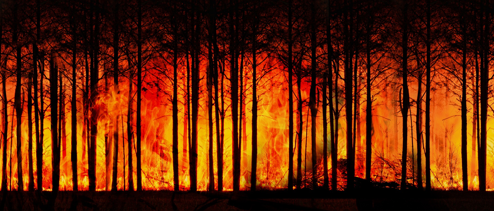

Останній раз концентрація вуглекислого газу в атмосфері Землі досягала порівнянних показників (тобто перевищувала 400 мільйонних часток) близько 3-5 млн років тому. Середні температури тоді були вищими за нинішні на 2-3 градуси, лід в Гренландії і на заході Антарктиди розтанув повністю, а рівень моря перевищував сьогоднішній приблизно на 10-20 метрів. Порівнянними темпами прискорюються всі процеси, пов'язані з глобальним потеплінням: підвищення рівня Світового океану, втрата зимового льодового покриву в Північному Льодовитому океані і в Антарктиці, зменшення льодового щита в Антарктиді і танення льодовиків в Гренландії, очевидний тренд на скорочення снігового покриву в Північній півкулі.
Тривалі періоди спекотної погоди стали за останні п'ять років найнебезпечнішим метеорологічним явищем на всіх континентах і вже забрали по всьому світу десятки тисяч життів. Крім того, спекотна погода призвела до безпрецедентного збільшення числа лісових пожеж - особливо в Європі і Північній Америці, а й в інших регіонах. Влітку 2019 року пожежі перекинулися на арктичні регіони, а число загорянь в лісах Амазонії стало рекордним.
